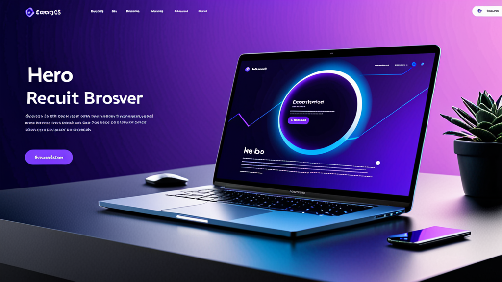

Meilleurs outils de réponse IA pour les messages de recrutement : le guide du recruteur pour des échanges plus intelligents
Si vous avez déjà passé plus de dix minutes à taper un message LinkedIn personnalisé pour un candidat passif, vous connaissez la difficulté. Vous voulez que cela sonne humain, fasse référence à son expérience spécifique et inclue le bon appel à l'action — sans coller par erreur le mauvais nom d'entreprise.
Les meilleurs outils de réponse IA pour les messages de recrutement résolvent exactement ce problème. Ils vous aident à rédiger des messages qui semblent personnels, pas formatés. Mais tous les outils ne fonctionnent pas de la même manière, et savoir les utiliser efficacement fait la différence entre ressembler à un robot et à un recruteur qui a vraiment fait ses devoirs.
Ce guide couvre ce qu'il faut rechercher dans un assistant IA pour recruteurs, comment l'utiliser sans perdre votre voix, et des conseils pratiques pour améliorer vos taux de réponse.
Pourquoi les recruteurs ont besoin d'une meilleure façon d'écrire des messages
Les recruteurs envoient des dizaines — parfois des centaines — de messages chaque semaine. Chacun nécessite un changement de contexte : examiner le profil du candidat, vérifier la description de poste et rédiger un message qui se démarque dans une boîte de réception bondée.
Le résultat ? De nombreux recruteurs se rabattent sur des modèles génériques. Les candidats les repèrent instantanément. Selon les données de LinkedIn, les taux de réponse aux InMail avoisinent les 20-25 % — et ce chiffre chute considérablement lorsque le message semble produit en série.
Un générateur de messages pour recruteurs ne fait pas que gagner du temps. Il vous aide à maintenir la qualité malgré le volume. Lorsque vous pouvez générer un brouillon qui intègre le poste du candidat, son secteur et un détail pertinent de son profil, vous avez plus de chances d'obtenir une réponse.
Qu'est-ce qui fait les meilleurs outils de réponse IA pour les messages de recrutement ?
Tous les outils d'écriture IA ne sont pas conçus pour le recrutement. Avant d'en choisir un, voici ce qu'il faut rechercher :
1. Sensibilité au contexte
L'outil doit comprendre qui vous êtes, qui est le candidat et quel poste vous recrutez. Les chatbots IA génériques qui ne tiennent pas compte du contexte produiront des brouillons vagues et inutilisables.
2. Contrôle du ton
Vous devez pouvoir ajuster le ton — du professionnel et formel au décontracté et direct. Un outil de prospection candidat qui n'écrit que dans un seul style ne fonctionnera pas pour différents postes et secteurs.
3. Intégration aux plateformes
Les meilleurs outils fonctionnent là où vous opérez déjà : LinkedIn Recruiter, Greenhouse, Lever, Workday. Devoir faire des copier-coller entre les onglets va à l'encontre du but de l'automatisation.
4. Confidentialité et contrôle
Vous ne devriez jamais avoir à vous soucier que votre clé API soit exposée ou que vos messages soient envoyés automatiquement. Les meilleurs outils de réponse IA pour les messages de recrutement vous donnent un contrôle total sur ce qui est envoyé et gardent vos données en local.
Comment utiliser un assistant IA pour recruteurs sans ressembler à une IA
Même le meilleur outil peut produire un résultat rigide si vous ne le guidez pas. Voici comment conserver une touche humaine :
Commencez par une requête solide
Ne vous contentez pas d'appuyer sur « générer ». Fournissez à l'outil des détails spécifiques :
- Le poste et l'entreprise actuels du candidat
- Un projet ou une réalisation spécifique de son profil
- Pourquoi ce poste est pertinent pour son parcours professionnel
Exemple de requête :
« Rédige un court message LinkedIn pour un Senior Product Manager chez Spotify. Mentionne son travail sur la personnalisation des fonctionnalités. Le poste est pour un Product Lead dans une fintech en Série B. Ton : amical mais professionnel. »
Modifiez le résultat
Relisez toujours le brouillon avant de l'envoyer. Supprimez toute phrase qui semble artificielle. Ajoutez une question ou une observation personnelle que vous seul pourriez remarquer. L'IA est un point de départ — c'est votre voix qui termine le message.
Utilisez différents modèles pour différentes étapes
Un message de prospection à froid ne doit pas ressembler à une lettre de refus. Un assistant IA pour recruteurs doit vous permettre de basculer entre :
- Prise de contact initiale
- Relance (en l'absence de réponse)
- Invitation à un entretien
- Refus ou mise à jour
Chaque étape nécessite un ton et un niveau de détail différents.
Exemples pratiques : avant et après l'assistance IA
Regardons des scénarios réels où un outil IA améliore le message.
Prospection à froid
Avant (modèle générique) :
« Bonjour [Nom], j'ai vu votre profil et je pense que vous seriez un excellent candidat pour un poste dans notre entreprise. Dites-moi si cela vous intéresse. »
Après (avec assistant IA recruteur) :
« Bonjour Sarah, votre travail sur la fidélisation des utilisateurs chez HubSpot a attiré mon attention — en particulier la campagne qui a réduit le taux d'attrition de 12 %. Nous constituons une équipe de croissance similaire dans une entreprise en Série A et votre expertise nous serait précieuse. Ouvert(e) à un échange rapide cette semaine ? »
Le second message fait référence à un travail spécifique, montre une recherche et pose une question claire. C'est la différence entre une suppression et une réponse.
Relance
Avant :
« Je fais suite à mon précédent message. Dites-moi si cela vous intéresse. »
Après :
« Bonjour Sarah — je sais que vous êtes occupée, alors je serai bref. Si le moment n'est pas idéal, pas de souci. Mais si vous êtes curieuse à propos du poste, je serais ravi de vous donner plus de détails. Dans tous les cas, merci d'y réfléchir. »
Cette relance reconnaît le temps du candidat et enlève la pression, ce qui conduit souvent à une réponse.
Conseils pour améliorer les taux de réponse des candidats
Utiliser les meilleurs outils de réponse IA pour les messages de recrutement n'est qu'une partie de l'équation. Voici des stratégies supplémentaires pour améliorer votre prospection :
Personnalisez au-delà du profil
Mentionnez quelque chose issu d'une publication récente, d'une connaissance commune ou d'une conférence à laquelle ils ont participé. L'IA ne peut pas toujours capturer ces nuances — ajoutez-les manuellement.
Restez court
Les candidats lisent les messages sur mobile. Visez 3 à 5 phrases maximum. Si votre brouillon IA est plus long, raccourcissez-le.
Incluez une demande à faible engagement
Au lieu de « Pouvons-nous planifier un appel ? », essayez « Je peux vous envoyer la description de poste si cela vous intéresse. » Moins d'engagement = plus de réponses.
Utilisez un objet clair (pour les e-mails)
Si vous utilisez un ATS comme Greenhouse ou Lever, votre message peut atterrir dans leur boîte de réception. Utilisez un objet comme « Question rapide sur votre expérience chez [Entreprise] » — pas « Opportunité d'emploi ».
Pourquoi l'automatisation du recrutement doit rester humaine
Certains recruteurs craignent qu'utiliser l'IA les rende moins authentiques. C'est tout le contraire. Lorsque vous automatisez les parties répétitives de l'écriture, vous libérez de l'énergie mentale pour ce qui compte vraiment : lire le profil du candidat, réfléchir à son adéquation et établir une relation de confiance.
Un outil d'automatisation du recrutement doit gérer la frappe, pas la réflexion. Les meilleurs outils respectent cette limite.
Choisir le bon outil pour votre flux de travail
Si vous évaluez des options, réfléchissez à la manière dont l'outil s'intègre dans votre routine quotidienne. Passez-vous la plupart de votre temps sur LinkedIn Recruiter ? Ou travaillez-vous principalement dans un ATS comme Workday ou Lever ? Les meilleurs outils de réponse IA pour les messages de recrutement s'intègrent parfaitement à votre flux de travail existant, et non comme une application séparée que vous devez penser à ouvrir.
Pensez aussi à la sécurité. Si votre organisation traite des données sensibles de candidats, vous avez besoin d'un outil qui traite les informations localement et ne stocke pas les messages sur des serveurs externes. Une conception axée sur la confidentialité est plus importante que des fonctionnalités tape-à-l'œil.
Un outil qui coche ces cases est RecruitReply AI — il fonctionne dans LinkedIn Recruiter et les principaux ATS, utilise l'IA sur l'appareil et n'envoie jamais de messages automatiquement. Mais quel que soit l'outil que vous choisissez, les principes de ce guide s'appliquent.
Réflexions finales
Les meilleurs outils de réponse IA pour les messages de recrutement ne visent pas à remplacer les recruteurs. Ils visent à supprimer les frictions. Lorsque vous pouvez générer un brouillon personnalisé et humain en quelques secondes, vous envoyez de meilleurs messages, plus régulièrement et avec moins d'effort.
Cela conduit à des taux de réponse plus élevés, de meilleures relations avec les candidats et plus de temps pour les parties stratégiques du recrutement qui comptent vraiment.
Si vous êtes prêt à essayer un outil qui respecte votre flux de travail et la vie privée de vos candidats, découvrez RecruitReply AI. Il est conçu pour les recruteurs qui veulent écrire de meilleurs messages — plus rapidement — sans perdre leur voix.